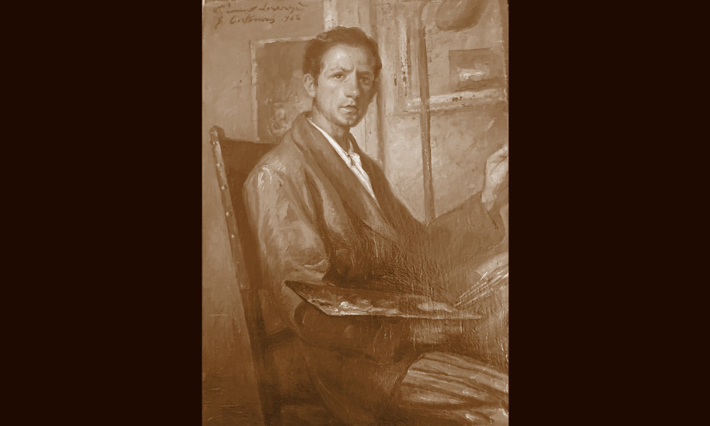

Cortinovis

- Dati biografici
- Albero familiare
- Luoghi
- Relazioni
- Bibliografia
- Opere trattate
Guido Cortinovis nacque a Bergamo nel 1912. Iscrittosi all'Accademia di Belle Arti, si specializzò nel campo della pittura. Inizialmente si dedicò alla copia dei quadri dei maestri veneti del passato, di cui divenne un profondo conoscitore, per poi completare poco dopo la sua formazione con il restauratore Mauro Pellicioli (1887–1974).
Con il tempo si avvicinò al mercato antiquario, ma fu nell'immediato dopoguerra che Cortinovis iniziò propriamente la sua attività, percorrendo l'Europa spesso accompagnato da Luigi Galli (1902–1986), uno tra gli antiquari più attivi nel nord Italia in quel periodo.
Trasferitosi a Bologna, aprì la galleria "Antichità Cortinovis" in via Castiglione 12 nel 1954. L'attività rimase aperta fino al 1992 e fu gestita dal figlio Marzio (1944–) dopo la morte di Guido, sopraggiunta nel 1988. In quegli anni frequentava Vienna, ma soprattutto l'Inghilterra, alla ricerca di dipinti italiani che nel corso del tempo erano usciti dal territorio nazionale, con particolare attenzione ai fondi oro e all'arte veneta.
Oltre alla galleria, Cortinovis possedeva uno studio privato lungo la stessa via Castiglione, al numero 31, dove accoglieva clienti, antiquari come Agnews, Baroni e Mathiessen, ma anche studiosi e storici dell'arte con i quali aveva intessuto uno stretto rapporto. Tra questi: Denis Mahon, Dwight Miller, Carlo Volpe, Federico Zeri e Roberto Longhi.
Nel 1959 Guido Cortinovis fu tra i fondatori dell'Associazione Antiquari d'Italia e della prima mostra mercato dell'antiquariato: la Biennale Internazionale dell'Antiquariato di Firenze. Il figlio Marzio si laureò nel 1969 con Carlo Volpe, discutendo una tesi sull'attività di Bartolomeo Manfredi, e fin da subito si interessò al commercio. Cominciò a viaggiare verso Londra per acquistare arte tedesca — Otto Dix, Max Klinger, George Grosz, Ernst Ludwig Kirchner tra gli artisti più ricercati — e poi verso Vienna per i disegni di Gustav Klimt. Marzio Cortinovis è stato tra i primi a introdurre l'arte tedesca e viennese in Italia, definendo un gusto personale che ha lasciato il segno nelle collezioni di una clientela privata sparsa tra Milano, Roma e Torino.
Altri antiquari:
Clienti:
Collaboratori:
- A. Villani e Figli (fotografo)
- Fototecnica Bolognese (fotografo)
- Carlo Volpe (storico dell'arte)
- Denis Mahon (storico dell'arte)
- Dwight Millet (storico dell'arte)
- Federico Zeri (storico dell'arte)
- Roberto Longhi (storico dell'arte)
Bibliografia essenziale:
- Batini, G. (1961), L'antiquario, Firenze, Vallecchi
Vedi le opere transitate presso l'antiquario presenti nel catalogo della Fondazione Zeri